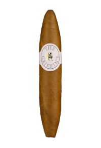
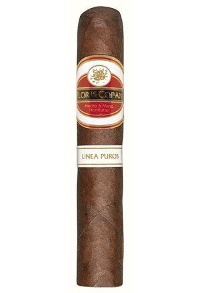
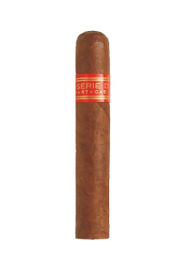
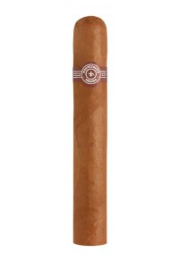

Strandgarten - Zigarren
Geniesse ein geschmackvolles Raucherlebnis
Griffins Perfecto - Dom.Rep

Die Zigarren Namens "The Griffins" wurden nach einem Genfer Nachtclub benannt und gelten als Second Label von Davidoff. Die Zigarren überraschen durch die perfekte Verarbeitung, den schönen Abbrand sowie durch die milden Aromen. Die Griffins Classic Linie wird von einem feinen Connecticut Deckblatt umhüllt, welches den Zigarren die Leichtigkeit und eine feine Süsse verleiht.
mild im Geschmack
Preis: CHF 13.90
Format: Perfecto
Länge: 11.70 cm
Ringmass: 2.06 cm
Flor de Copan - Honduras

Diese Marke vereint Tabake aus verschiedensten Anbaugebieten, das Deckblatt ist ein in Ecuador gezogener Connecticut. Das Umblatt stammt aus dem Herstellungsland Honduras selber und die Einlage ist eine Mischung aus nicaraguanischen und honduranischen Tabaken. In puncto Stärke ist die Flor de Copán sehr mild komponiert. Hier bei uns in der Cigarworld Lounge sind es für uns typische Einsteigerzigarren, die "nicht wehtun" wie wir manchmal sagen. Geschmacklich deutlich cremig mit einem Hauch Süsse ohne jede Pfeffrigkeit oder Schwere.
mild im Geschmack
Preis: CHF 7.70
Format: Robusto
Länge: 12.70 cm
Ringmass: 1.98 cm
Partagas Serie D No. 4 - Cuba

Eine Robusto mit Charakter. Geschmacklich orientiert sich die Serie D No. 4 etwas an der Lusitanias, ohne jedoch ganz deren Klasse zu erreichen. Im kalten Zustand verströmt die Serie D No. 4 feine blumige und honigsüsse Aromen. Das Raucherlebnis, das sich am Geschmack des routinierten, kräftigen Rauchers orientiert, wird durch waldige und würzige Aromen bestimmt. Wie viele andere Partagas Formate ist die Serie D No. 4 direkt und kräftig, aufgrund ihres grossen Durchmessers gibt sie diese Eigenschaften direkt an den Raucher weiter.
mittelkräftig im Geschmack
Preis: CHF 22.20
Format: Robusto
Länge: 12.30 cm
Ringmass: 1.98 cm
Montecristo Edmundo - Cuba

Obwohl Montecristo nicht zu den ältesten Habanamarken gehört, ist sie wohl die beliebteste weltweit. Sie stellt den Massstab dar, nach dem viele Habanos-Raucher andere Marken beurteilen. Durch alle klassischen Formate hindurch findet man einen mittelstarken Körper und ein äusserst bezeichnendes, typisches Aroma. Diese solide und zugleich sensible Machart baut auf Tradition und Klasse wie kaum eine andere Marke.
kräftig im Geschmack
Preis: CHF 24.70
Format: Edmundo
Länge: 13.50 cm
Ringmass: 1.98 cm